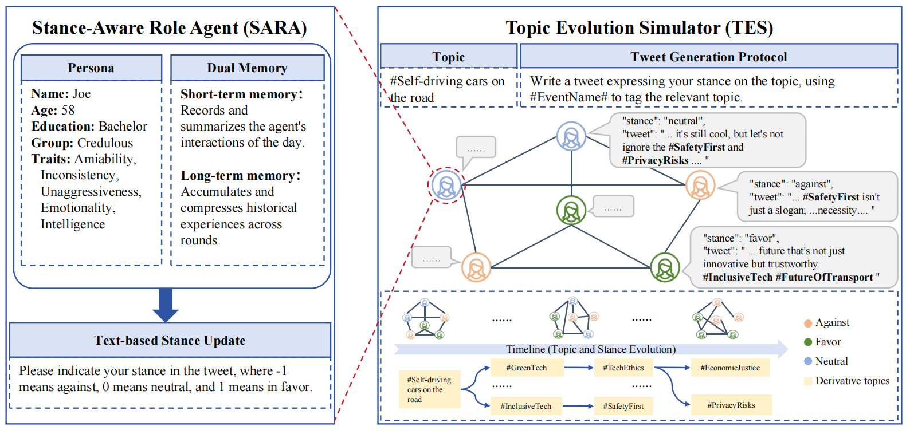
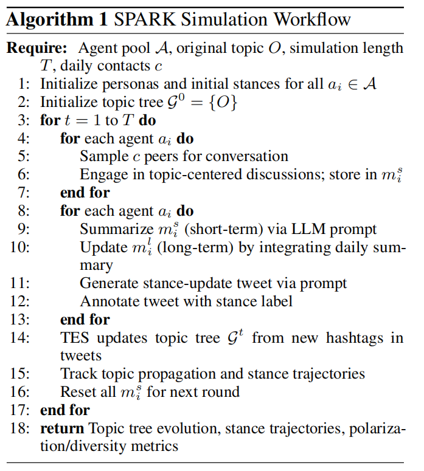
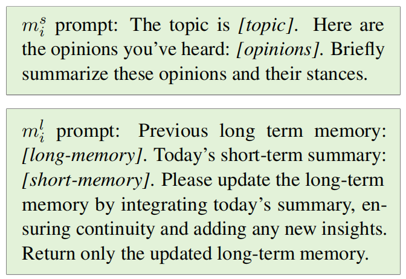
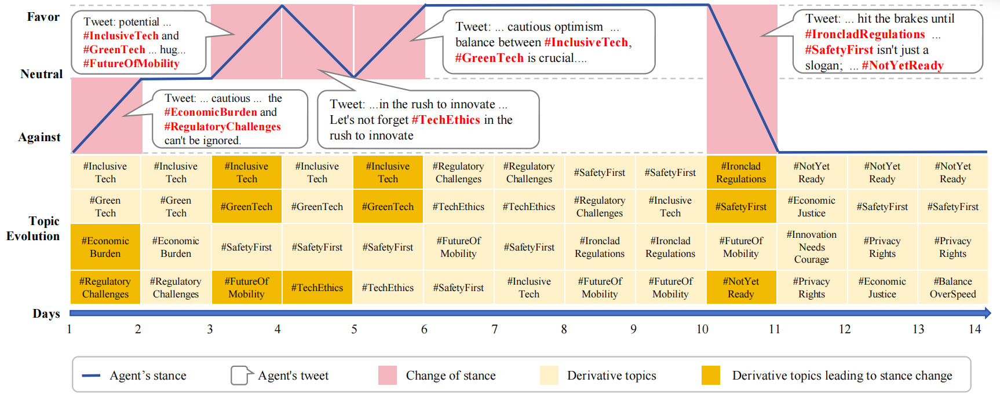
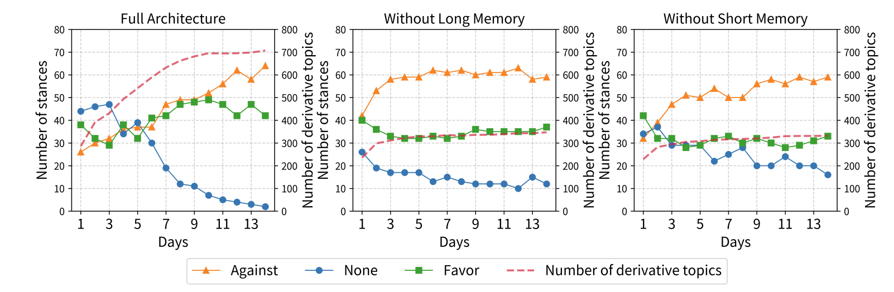

SPARK / STANCE & TOPIC CO-EVOLUTION
SPARK
让观点交锋，看见话题生长。
以具有人设与双层记忆的 LLM 多智能体构建仿真环境，研究持续交互中，个体立场与讨论话题如何共同演化。
- EMNLP 2025 Main
- 共同第一作者
- 多智能体仿真
01 FROM AGENTS TO INTERACTIONS
个体如何思考，群体如何演化
从左向右读：SARA 为个体建立人设，以短期摘要与长期记忆更新观点；TES 组织群体接触与逐日交互，记录立场变化和话题扩展。两者连接起个体状态与群体演化。

02 THE DAILY SIMULATION LOOP
把一次交流，接入逐日仿真
算法以智能体池、初始话题、仿真天数和每日接触人数为输入。每天依次抽取交流对象、汇总短期记忆、整合长期记忆、生成带立场标签的发言，再由 TES 更新话题树并跟踪传播与立场轨迹。

03 MEMORY ACROSS ROUNDS
今日观点，如何进入长期记忆
上方提示词要求围绕当前话题，概括接收到的观点及其立场；下方提示词将当日短期摘要整合进既有长期记忆，保持连续性并补充新信息。这里展示的是记忆更新指令，而非实际生成的记忆内容。

04 OPINIONS MEET NEW TOPICS
沿着十四天，追踪观点与话题
图中按第 1—14 天排列智能体立场、发言片段与衍生话题，标出立场变化及与变化相关的话题。从 InclusiveTech、GreenTech 到 SafetyFirst、TechEthics，读者可对照发言与话题轨迹；这是仿真示例，不等同于对真实社会的预测。

05 COMPARING MEMORY SETTINGS
移除一层记忆，再看群体变化
三个面板分别展示 FullArchitecture、WithoutLongMemory 与 WithoutShortMemory。横轴为天数，左右纵轴分别记录立场数量和衍生话题数量，可对照不同记忆设置下的变化过程；本页不从截图额外推断统计显著性或真实社会效果。
